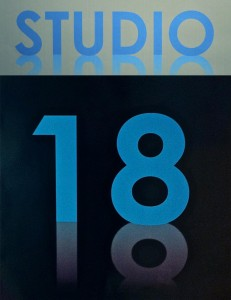

Morgentrening ved STUDIO 18 - rabatterte klippekort
- Kategori:
- Kurs og workshops
Kurs og workshops
Åpent for profesjonelle skuespillere, dvs. treårig utdanning i skuespillerkunst eller tilsvarende profesjonell erfaring. - Dato:
- 01.01.2014 til 30.06.2014
- Start kl :
- 09:00
- Slutt kl :
- 10:00
- Pris:
- 750,-
- Adresse:
- STUDIO 18, Kampengata 18, Oslo
 Norsk Skuespillersenter samarbeider med STUDIO 18 om å tilby profesjonell morgentrening for skuespillere. Profesjonelle scenekunstnere kan kjøpe klippekort til redusert pris gjennom Norsk Skuespillersenter.
{kind=link}
Program for våren
Kommer snart.
Informasjon om metoder og pedagoger fra 2013: METODER OG PEDAGOGER STUDIO 18 HØST 2013
For hvem?
STUDIO 18 retter seg i hovedsak inn mot det profesjonelle scenekunstmiljøet. Studenter er også velkommen. Skuespiller- og danseralliansen er blant de som benytter seg av tilbudet.
Når?
Morgentreningen foregår fra kl. 09:00 - 10:00, mandag til torsdag hver uke (untatt ferier og helligdager).
Hvor
Våren 2014 vil morgentreningen foregå i lokalene til Norsk Skuespillersenter i Welhavensgate 1.
Dessverre har STUDIO 18s huseier ikke ønsket å fornye kontrakten for 2014. Dermed må morgentreningen flytte ut av lokalene på Kampen. For å sikre at morgentreningen kan fortsette som før fram til STUDIO 18 har funnet seg nye lokaler, flytter morgentreningen midlertidig til Skuespillersenteret.
Kjøp klippekort
Klippekortene har 10 klipp og varer i 6 måneder fra første gangs bruk.
- Profesjonelle skuespillere kan kjøpe rabatterte klippekort gjennom Norsk Skuespillersenter til 750,- kroner.
- Klippekort til full pris koster 1500,- og kan kjøpes direkte fra STUDIO 18.
Drop in kr.170,-
1 uke (4dg sammenhengende trening) kr.500,-
1 måned (16dg sammenhengende trening) kr.1600,-
Studenter 10% rabatt
Kontkakt STUDIO 18
Har du spørsmål om morgentreningen? Skriv til studio18oslo(a)gmail.com eller ring 47630376 (Henriette Blakstad).
Hvis spørsmålet gjelder rabatterte klippekort kan du kontakte Norsk Skuespillersenter.